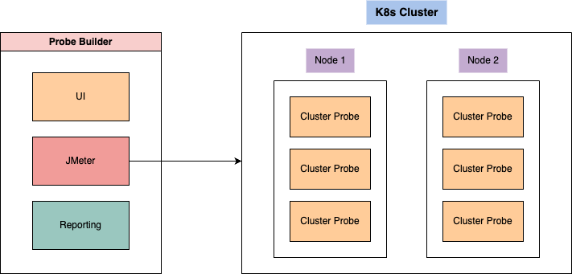

Introduction
Welcome to the documentation of Cluster Probe and Probe Builder. This documentation provides comprehensive information and guidance on the Cluster Probe and Probe Builder projects, which are software packages designed for testing scalability and performance in Kubernetes clusters. The main objective of these projects is to create a software-based solution for testing typical cloud service use cases within the context of the reCluster project, a self-aware cloud orchestration system. The reCluster architecture presents a sustainable approach to data centre operations, leveraging upcycled hardware and prioritizing resource reduction. It seeks to minimize the environmental impact associated with computing while still offering viable computing capabilities. The main goal of the both Cluster Probe and Probe Builder is to be deployed on the reCluster and truly verify the computational capabilities of the system.
However, Cluster Probe and Probe Builder offer a robust and user-friendly solution for testing the capabilities and limits of all the Kubernetes clusters. They enable application developers, system administrators, and testers to assess the performance, resilience, and efficiency of their cluster deployments.
Cluster Probe allows users to conduct thorough performance tests by simulating real-world scenarios and evaluating the cluster's response under various workloads. This tool provides valuable insights into the system's capacity, identifies bottlenecks, and assesses scalability potential. On the other hand, Probe Builder , complements Cluster Probe by providing a convenient way to create custom test cases and scenarios. It utilizes JMeter's Java API to generate and control the load based on the specified input parameters. This allows users to define specific test criteria and performance goals, enabling fine-grained control over the testing process.
The documentation is structured to cover the requirements, architecture, implementation, testing methodologies, API specifications, and user guidance for both Cluster Probe and Probe Builder. Whether you are new to these projects or seeking advanced configuration options, this documentation serves as a comprehensive resource for effectively utilizing these testing tools.
Requirements and Dependencies
Both projects, Cluster Probe and Probe Builder, are developed using the Java programming language. Familiarity with containerization concepts and Docker is required. Additionally, code snippets and examples will incorporate Kubernetes concepts. To run the local examples, ensure you have the following dependencies installed:
- JDK 17: Java Development Kit version 17.
- Docker: Containerization platform for building and managing containers.
- Minikube: Lightweight Kubernetes implementation for local testing and development.
- Git: Version control system for code repositories.
- Postman: API development and testing tool (recommended for testing the API endpoints).
Please ensure that you have the appropriate versions of these dependencies installed and configured correctly before proceeding with the projects.
Note: Although Probe Builder is based on JMeter, it is not necessary to have in-depth knowledge of JMeter to utilize its basic functionalities. However, it is required to have JMeter installed. You can download JMeter from the official JMeter download page.
Additionally, a GitHub account is recommended to access the code repositories and version control features.
By having the above dependencies set up properly, you will be ready to explore and utilize the features and functionalities of Cluster Probe and Probe Builder effectively.
Key features
Cluster Probe and Probe Builder are designed to provide a system for defining and executing test loads based on a set of common and identified use cases. These use cases encompass various scenarios such as long-lasting intense CPU operations, file system operations, JSON data payloads, and file uploads.
Probe Builder offers a user-friendly interface that enables users to specify these use cases and generate JMeter test plans. These test plans are executed and loaded onto a designated Kubernetes (k8s) cluster. After the tests are performed, Probe Builder collects the data and generates reports in the form of plots and CSV files. These reports provide valuable insights into the performance of the tested cluster.
Cluster Probe, on the other hand, functions as a container running within k8s pods. It implements a REST API service capable of receiving different use cases, as mentioned earlier. For instance, it can handle CPU load scenarios using stress-ng or perform file operations. The diagram below illustrates the overall architecture and interaction between the components.

You can find more detailed information about both of the projects in the following sections probe-builder , cluster-probe